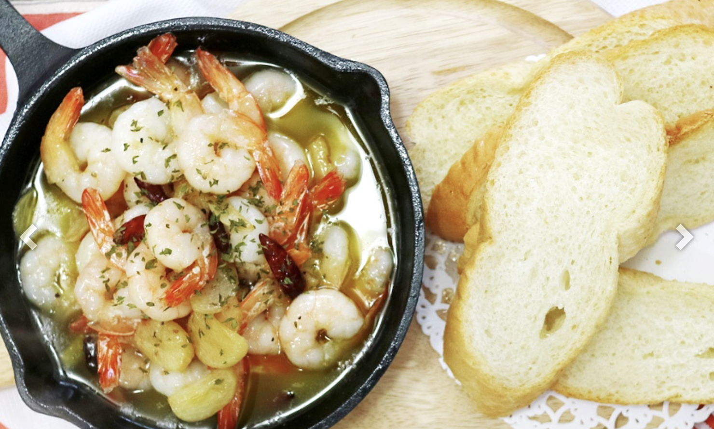

감바스 레시피
조리 15분 | 2인분 | 난이도 : 초급
집에서도 마치 이탈리아에 온 듯한 느낌을 받을 수 있는 맛있는 감바스 요리를 만들어요!!
누구나 쉬운 감바스 15분 요리입니다~!!
레시피 재료

[2인분]
재료: 중새우15마리(없다면 칵테일새우나 대하도 가능해요), 통마늘 15알, 올리브유 1컵(종이컵), 페페로치노 1스푼, 허브맛솔트조금, 파슬리가루, 바게트빵
레시피 내용
1. 제일 먼저 새우를 손질해 주시는데 대하의 경우에는 껍질을 제거해주세요. 저는 손질된 중새우를 이용했어요.새우를 손질한뒤 키친타올에 올려 물기를 제거해줍니다.
2. 그리고 우리의 허브맛 솔트를 준비해서 톡톡 뿌려줍니다
3. 통마늘을 15알 정도 준비해서 편 썰어줍니다.
4. 이제 냄비에 올리브유를 한컵을 넣어줍니다. 불을 중약불을 해준뒤 기름을 데워줍니다.
5. 기름의 온도가 어느정도 올라갔다면 이제 편마늘을 넣고 튀겨주세요. 마늘이 바삭하게 색이 변하기 시작하면~!
6. 페페로치노와 새우를 넣어줍니다. 새우의 색이 변할때 까지 튀겨주면 감바스 만들기 완성이예요.
outro
이제 맛있는 감바스를 친구, 가족, 또는 연인과 함께 즐기세요~!!!
맛있는 바게뜨와 함께 즐긴다면 더 행복하게 즐길 수 있답니다~!!!
다른 게시글들이 궁금하다면?? 청정원 홈페이지를 방문해주세요~~!!
👉 청정원 방문하기